- After studying this chapter, you will be able to:
- Describe the functions of the skeletal system and define its two major subdivisions
- Identify the bones and bony structures of the skull, the cranial suture lines, the cranial fossae, and the openings in the skull
- Discuss the vertebral column and regional variations in its bony components and curvatures
- Describe the components of the thoracic cage
- Discuss the embryonic development of the axial skeleton
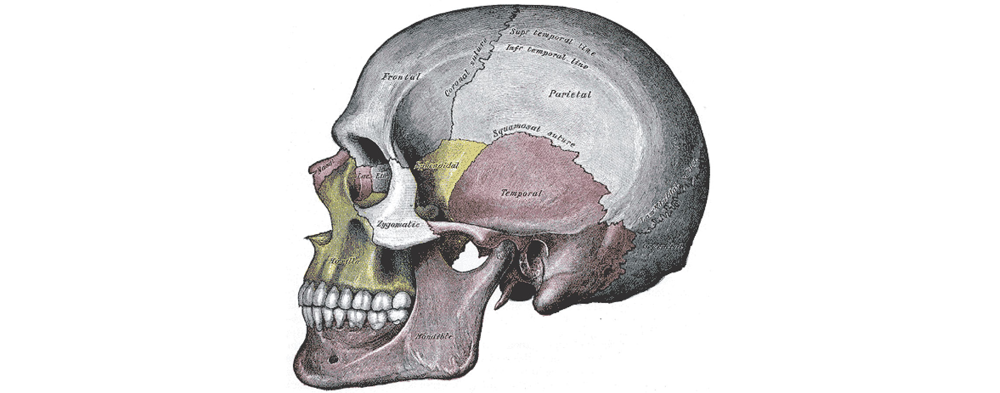
- Discuss the functions of the skeletal system
- Distinguish between the axial skeleton and appendicular skeleton
- Define the axial skeleton and its components
- Define the appendicular skeleton and its components
The skeletal system includes all of the bones, cartilages, and ligaments of the body that support and give shape to the body and body structures. Theskeletonconsists of the bones of the body. For adults, there are 206 bones in the skeleton. Younger individuals have higher numbers of bones because some bones fuse together during childhood and adolescence to form an adult bone. The primary functions of the skeleton are to provide a rigid, internal structure that can support the weight of the body against the force of gravity, and to provide a structure upon which muscles can act to produce movements of the body. The lower portion of the skeleton is specialized for stability during walking or running. In contrast, the upper skeleton has greater mobility and ranges of motion, features that allow you to lift and carry objects or turn your head and trunk.
In addition to providing for support and movements of the body, the skeleton has protective and storage functions. It protects the internal organs, including the brain, spinal cord, heart, lungs, and pelvic organs. The bones of the skeleton serve as the primary storage site for important minerals such as calcium and phosphate. The bone marrow found within bones stores fat and houses the blood-cell producing tissue of the body.
The skeleton is subdivided into two major divisions—the axial and appendicular.
The skeleton is subdivided into two major divisions—the axial and appendicular. Theaxial skeletonforms the vertical, central axis of the body and includes all bones of the head, neck, chest, and back (Figure 7.2). It serves to protect the brain, spinal cord, heart, and lungs. It also serves as the attachment site for muscles that move the head, neck, and back, and for muscles that act across the shoulder and hip joints to move their corresponding limbs.
The axial skeleton of the adult consists of 80 bones, including theskull, thevertebral column, and thethoracic cage. The skull is formed by 22 bones. Also associated with the head are an additional seven bones, including thehyoid boneand theear ossicles(three small bones found in each middle ear). The vertebral column consists of 24 bones, each called avertebra, plus thesacrumandcoccyx. The thoracic cage includes the 12 pairs ofribs, and thesternum, the flattened bone of the anterior chest.
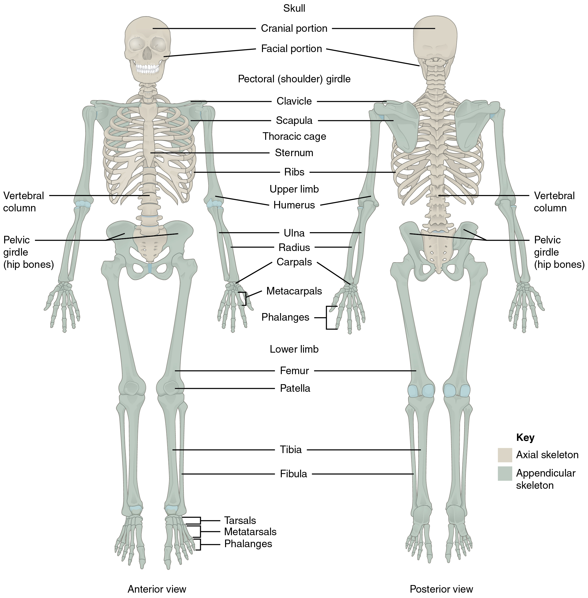
Figure \(\PageIndex{1}\):Axial and Appendicular SkeletonThe axial skeleton supports the head, neck, back, and chest and thus forms the vertical axis of the body. It consists of the skull, vertebral column (including the sacrum and coccyx), and the thoracic cage, formed by the ribs and sternum. The appendicular skeleton is made up of all bones of the upper and lower limbs.
Theappendicular skeletonincludes all bones of the upper and lower limbs, plus the bones that attach each limb to the axial skeleton. There are 126 bones in the appendicular skeleton of an adult. The bones of the appendicular skeleton are covered in a separate chapter.
📖 OpenStax Anatomy & Physiology 2e, Section 7.2. openstax.org · CC BY 4.0
- List and identify the bones of the brain case and face
- Locate the major suture lines of the skull and name the bones associated with each
- Locate and define the boundaries of the anterior, middle, and posterior cranial fossae, the temporal fossa, and infratemporal fossa
- Define the paranasal sinuses and identify the location of each
- Name the bones that make up the walls of the orbit and identify the openings associated with the orbit
- Identify the bones and structures that form the nasal septum and nasal conchae, and locate the hyoid bone
- Identify the bony openings of the skull
Thecranium(skull) is the skeletal structure of the head that supports the face and protects the brain. It is subdivided into thefacial bonesand thebrain case, or cranial vault (Figure \(\PageIndex{1}\)). The facial bones underlie the facial structures, form the nasal cavity, enclose the eyeballs, and support the teeth of the upper and lower jaws. The rounded brain case surrounds and protects the brain and houses the middle and inner ear structures.
In the adult, the skull consists of 22 individual bones, 21 of which are immobile and united into a single unit. The 22nd bone is themandible(lower jaw), which is the only moveable bone of the skull.
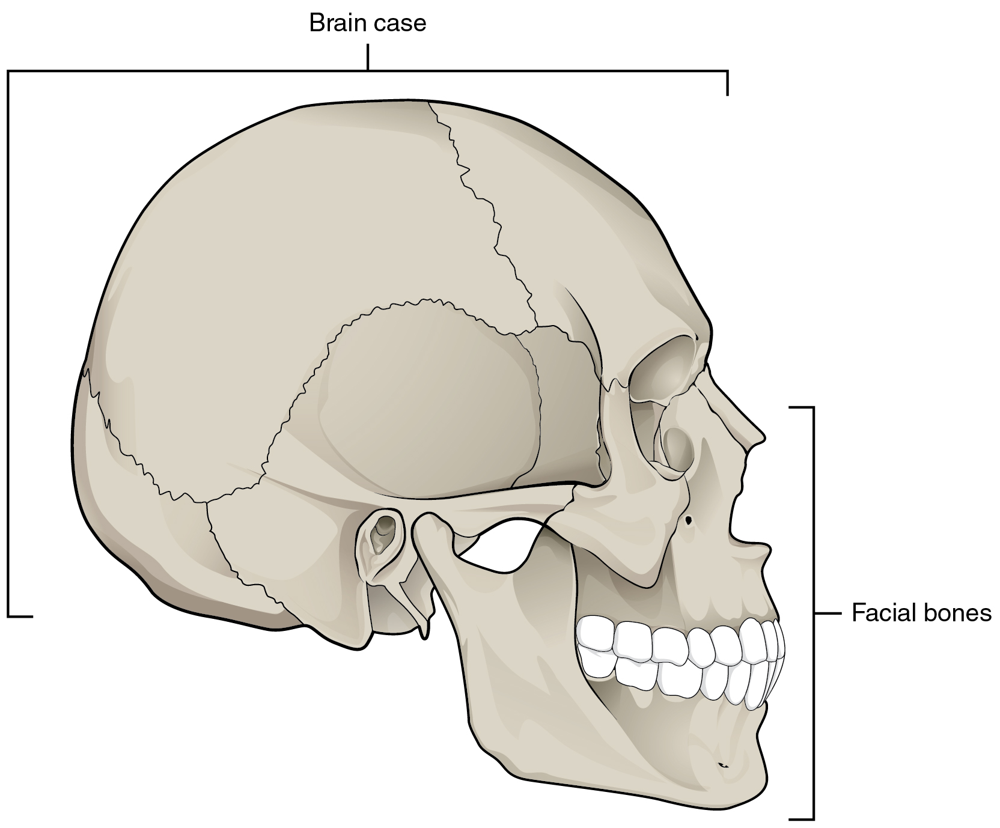
Watch thisvideoto view a rotating and exploded skull, with color-coded bones. Which bone (yellow) is centrally located and joins with most of the other bones of the skull?
The anterior skull consists of the facial bones and provides the bony support for the eyes and structures of the face. This view of the skull is dominated by the openings of the orbits and the nasal cavity. Also seen are the upper and lower jaws, with their respective teeth (Figure \(\PageIndex{2}\)).
Theorbitis the bony socket that houses the eyeball and muscles that move the eyeball or open the upper eyelid. The upper margin of the anterior orbit is thesupraorbital margin. Located near the midpoint of the supraorbital margin is a small opening called thesupraorbital foramen. This provides for passage of a sensory nerve to the skin of the forehead. Below the orbit is theinfraorbital foramen, which is the point of emergence for a sensory nerve that supplies the anterior face below the orbit.
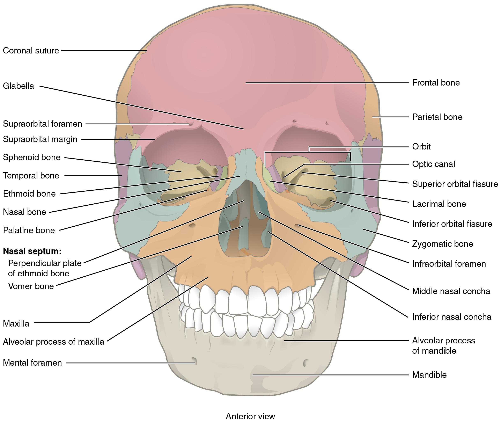
Inside the nasal area of the skull, thenasal cavityis divided into halves by thenasal septum. The upper portion of the nasal septum is formed by theperpendicular plate of the ethmoid boneand the lower portion is thevomer bone. Each side of the nasal cavity is triangular in shape, with a broad inferior space that narrows superiorly. When looking into the nasal cavity from the front of the skull, two bony plates are seen projecting from each lateral wall. The larger of these is theinferior nasal concha, an independent bone of the skull. Located just above the inferior concha is themiddle nasal concha, which is part of the ethmoid bone. A third bony plate, also part of the ethmoid bone, is thesuperior nasal concha. It is much smaller and out of sight, above the middle concha. The superior nasal concha is located just lateral to the perpendicular plate, in the upper nasal cavity.
A view of the lateral skull is dominated by the large, rounded brain case above and the upper and lower jaws with their teeth below (Figure \(\PageIndex{3}\)). Separating these areas is the bridge of bone called the zygomatic arch. Thezygomatic archis the bony arch on the side of skull that spans from the area of the cheek to just above the ear canal. It is formed by the junction of two bony processes: a short anterior component, thetemporal process of the zygomatic bone(the cheekbone) and a longer posterior portion, thezygomatic process of the temporal bone, extending forward from the temporal bone. Thus the temporal process (anteriorly) and the zygomatic process (posteriorly) join together, like the two ends of a drawbridge, to form the zygomatic arch. One of the major muscles that pulls the mandible upward during biting and chewing arises from the zygomatic arch.
On the lateral side of the brain case, above the level of the zygomatic arch, is a shallow space called thetemporal fossa. Below the level of the zygomatic arch and deep to the vertical portion of the mandible is another space called theinfratemporal fossa. Both the temporal fossa and infratemporal fossa contain muscles that act on the mandible during chewing.
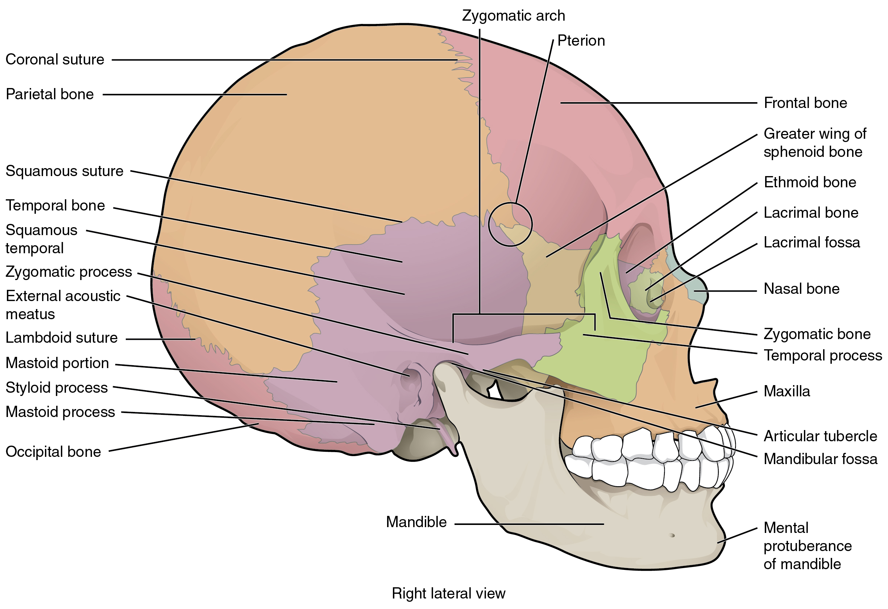
The brain case contains and protects the brain. The interior space that is almost completely occupied by the brain is called thecranial cavity. This cavity is bounded superiorly by the rounded top of the skull, which is called thecalvaria(skullcap), and the lateral and posterior sides of the skull. The bones that form the top and sides of the brain case are usually referred to as the “flat” bones of the skull.
The floor of the brain case is referred to as the base of the skull. This is a complex area that varies in depth and has numerous openings for the passage of cranial nerves, blood vessels, and the spinal cord. Inside the skull, the base is subdivided into three large spaces, called theanterior cranial fossa,middle cranial fossa, andposterior cranial fossa(fossa = “trench or ditch”) (Figure \(\PageIndex{4}\)). From anterior to posterior, the fossae increase in depth. The shape and depth of each fossa corresponds to the shape and size of the brain region that each houses. The boundaries and openings of the cranial fossae (singular = fossa) will be described in a later section.
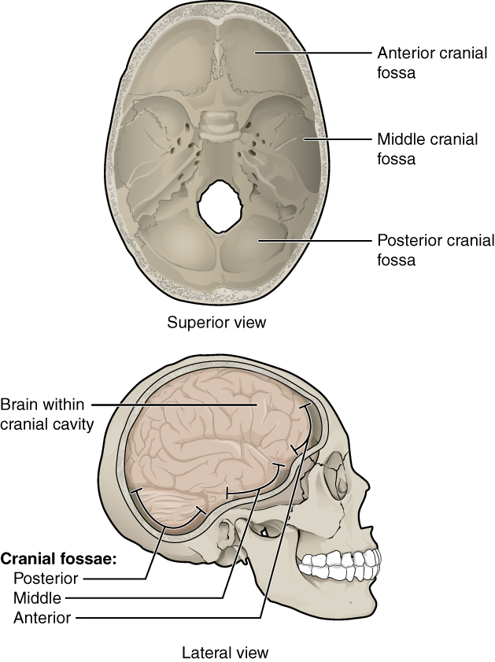
The brain case consists of eight bones. These include the paired parietal and temporal bones, plus the unpaired frontal, occipital, sphenoid, and ethmoid bones.
Theparietal boneforms most of the upper lateral side of the skull (see Figure \(\PageIndex{3}\)). These are paired bones, with the right and left parietal bones joining together at the top of the skull. Each parietal bone is also bounded anteriorly by the frontal bone, inferiorly by the temporal bone, and posteriorly by the occipital bone.
Thetemporal boneforms the lower lateral side of the skull (see Figure \(\PageIndex{3}\)). Common wisdom has it that the temporal bone (temporal = “time”) is so named because this area of the head (the temple) is where hair typically first turns gray, indicating the passage of time.
The temporal bone is subdivided into several regions (Figure \(\PageIndex{5}\)). The flattened, upper portion is the squamous portion of the temporal bone. Below this area and projecting anteriorly is the zygomatic process of the temporal bone, which forms the posterior portion of the zygomatic arch. Posteriorly is the mastoid portion of the temporal bone. Projecting inferiorly from this region is a large prominence, themastoid process, which serves as a muscle attachment site. The mastoid process can easily be felt on the side of the head just behind your earlobe. On the interior of the skull, the petrous portion of each temporal bone forms the prominent, diagonally orientedpetrous ridgein the floor of the cranial cavity. Located inside each petrous ridge are small cavities that house the structures of the middle and inner ears.
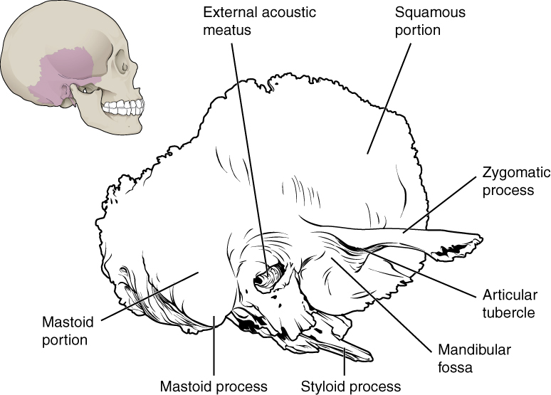
Important landmarks of the temporal bone, as shown in Figure 7.8, include the following:
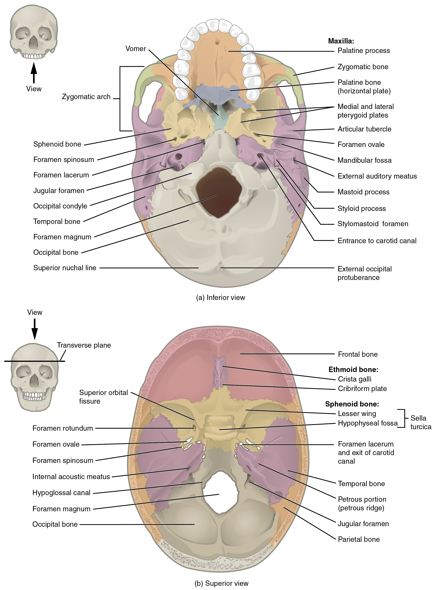
Thefrontal boneis the single bone that forms the forehead. At its anterior midline, between the eyebrows, there is a slight depression called theglabella(see Figure 7.5). The frontal bone also forms the supraorbital margin of the orbit. Near the middle of this margin, is the supraorbital foramen, the opening that provides passage for a sensory nerve to the forehead. The frontal bone is thickened just above each supraorbital margin, forming rounded brow ridges. These are located just behind your eyebrows and vary in size among individuals, although they are generally larger in males. Inside the cranial cavity, the frontal bone extends posteriorly. This flattened region forms both the roof of the orbit below and the floor of the anterior cranial cavity above (see Figure 7.8b).
Theoccipital boneis the single bone that forms the posterior skull and posterior base of the cranial cavity (Figure \(\PageIndex{7}\); see also Figure \(\PageIndex{6}\)). On its outside surface, at the posterior midline, is a small protrusion called theexternal occipital protuberance, which serves as an attachment site for a ligament of the posterior neck. Lateral to either side of this bump is asuperior nuchal line(nuchal = “nape” or “posterior neck”). The nuchal lines represent the most superior point at which muscles of the neck attach to the skull, with only the scalp covering the skull above these lines. On the base of the skull, the occipital bone contains the large opening of theforamen magnum, which allows for passage of the spinal cord as it exits the skull. On either side of the foramen magnum is an oval-shapedoccipital condyle. These condyles form joints with the first cervical vertebra and thus support the skull on top of the vertebral column.
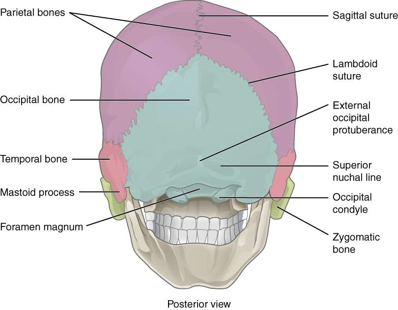
Thesphenoid boneis a single, complex bone of the central skull (Figure \(\PageIndex{8}\)). It serves as a “keystone” bone, because it joins with almost every other bone of the skull. The sphenoid forms much of the base of the central skull (see Figure \(\PageIndex{6}\)) and also extends laterally to contribute to the sides of the skull (see Figure \(\PageIndex{3}\)). Inside the cranial cavity, the right and leftlesser wings of the sphenoid bone, which resemble the wings of a flying bird, form the lip of a prominent ridge that marks the boundary between the anterior and middle cranial fossae. Thesella turcica(“Turkish saddle”) is located at the midline of the middle cranial fossa. This bony region of the sphenoid bone is named for its resemblance to the horse saddles used by the Ottoman Turks, with a high back and a tall front. The rounded depression in the floor of the sella turcica is thehypophyseal (pituitary) fossa, which houses the pea-sized pituitary (hypophyseal) gland. Thegreater wings of the sphenoid boneextend laterally to either side away from the sella turcica, where they form the anterior floor of the middle cranial fossa. The greater wing is best seen on the outside of the lateral skull, where it forms a rectangular area immediately anterior to the squamous portion of the temporal bone.
On the inferior aspect of the skull, each half of the sphenoid bone forms two thin, vertically oriented bony plates. These are themedial pterygoid plateandlateral pterygoid plate(pterygoid = “wing-shaped”). The right and left medial pterygoid plates form the posterior, lateral walls of the nasal cavity. The somewhat larger lateral pterygoid plates serve as attachment sites for chewing muscles that fill the infratemporal space and act on the mandible.
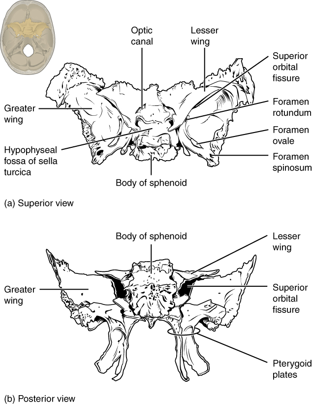
Theethmoid boneis a single, midline bone that forms the roof and lateral walls of the upper nasal cavity, the upper portion of the nasal septum, and contributes to the medial wall of the orbit (Figure \(\PageIndex{9}\) and Figure \(\PageIndex{10}\)). On the interior of the skull, the ethmoid also forms a portion of the floor of the anterior cranial cavity (see Figure 7.8b).
Within the nasal cavity, the perpendicular plate of the ethmoid bone forms the upper portion of the nasal septum. The ethmoid bone also forms the lateral walls of the upper nasal cavity. Extending from each lateral wall are the superior nasal concha and middle nasal concha, which are thin, curved projections that extend into the nasal cavity (Figure \(\PageIndex{11}\)).
In the cranial cavity, the ethmoid bone forms a small area at the midline in the floor of the anterior cranial fossa. This region also forms the narrow roof of the underlying nasal cavity. This portion of the ethmoid bone consists of two parts, the crista galli and cribriform plates. Thecrista galli(“rooster’s comb or crest”) is a small upward bony projection located at the midline. It functions as an anterior attachment point for one of the covering layers of the brain. To either side of the crista galli is thecribriform plate(cribrum = “sieve”), a small, flattened area with numerous small openings termed olfactory foramina. Small nerve branches from the olfactory areas of the nasal cavity pass through these openings to enter the brain.
The lateral portions of the ethmoid bone are located between the orbit and upper nasal cavity, and thus form the lateral nasal cavity wall and a portion of the medial orbit wall. Located inside this portion of the ethmoid bone are several small, air-filled spaces that are part of the paranasal sinus system of the skull.
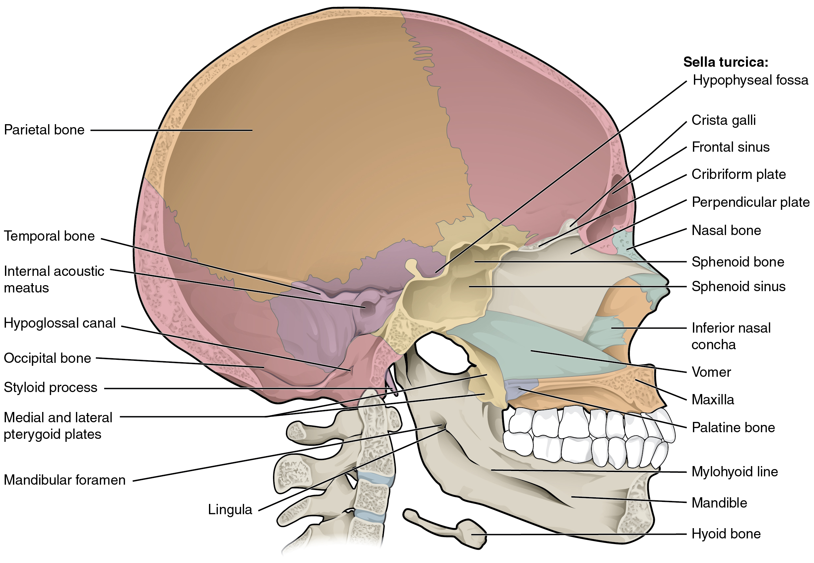
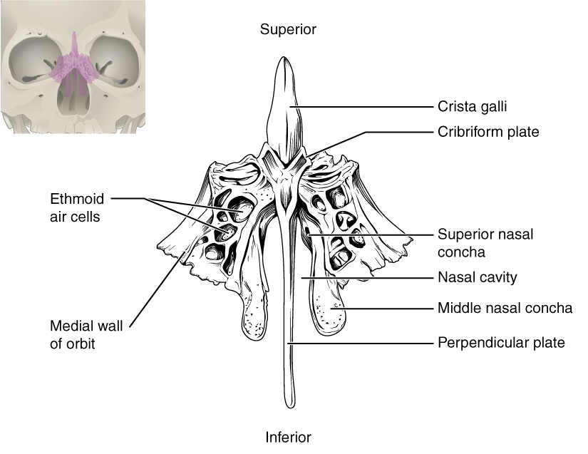
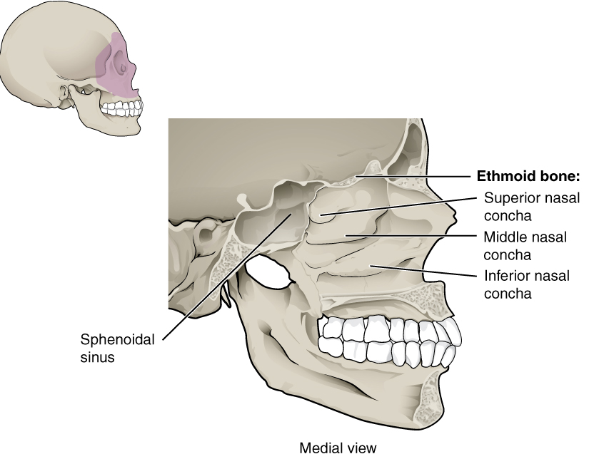
Asutureis an immobile joint between adjacent bones of the skull. The narrow gap between the bones is filled with dense, fibrous connective tissue that unites the bones. The long sutures located between the bones of the brain case are not straight, but instead follow irregular, tightly twisting paths. These twisting lines serve to tightly interlock the adjacent bones, thus adding strength to the skull for brain protection.
The two suture lines seen on the top of the skull are the coronal and sagittal sutures. Thecoronal sutureruns from side to side across the skull, within the coronal plane of section (see Figure \(\PageIndex{3}\)). It joins the frontal bone to the right and left parietal bones. Thesagittal sutureextends posteriorly from the coronal suture, running along the midline at the top of the skull in the sagittal plane of section (see Figure \(\PageIndex{7}\)). It unites the right and left parietal bones. On the posterior skull, the sagittal suture terminates by joining the lambdoid suture. Thelambdoid sutureextends downward and laterally to either side away from its junction with the sagittal suture. The lambdoid suture joins the occipital bone to the right and left parietal and temporal bones. This suture is named for its upside-down "V" shape, which resembles the capital letter version of the Greek letter lambda (Λ). Thesquamous sutureis located on the lateral skull. It unites the squamous portion of the temporal bone with the parietal bone (see Figure 7.5). At the intersection of four bones is thepterion, a small, capital-H-shaped suture line region that unites the frontal bone, parietal bone, squamous portion of the temporal bone, and greater wing of the sphenoid bone. It is the weakest part of the skull. The pterion is located approximately two finger widths above the zygomatic arch and a thumb’s width posterior to the upward portion of the zygomatic bone.
Head and traumatic brain injuries are major causes of immediate death and disability, with bleeding and infections as possible additional complications. According to the Centers for Disease Control and Prevention (2010), approximately 30 percent of all injury-related deaths in the United States are caused by head injuries. The majority of head injuries involve falls. They are most common among young children (ages 0–4 years), adolescents (15–19 years), and the elderly (over 65 years). Additional causes vary, but prominent among these are automobile and motorcycle accidents.
Strong blows to the brain-case portion of the skull can produce fractures. These may result in bleeding inside the skull with subsequent injury to the brain. The most common is a linear skull fracture, in which fracture lines radiate from the point of impact. Other fracture types include a comminuted fracture, in which the bone is broken into several pieces at the point of impact, or a depressed fracture, in which the fractured bone is pushed inward. In a contrecoup (counterblow) fracture, the bone at the point of impact is not broken, but instead a fracture occurs on the opposite side of the skull. Fractures of the occipital bone at the base of the skull can occur in this manner, producing a basilar fracture that can damage the artery that passes through the carotid canal.
A blow to the lateral side of the head may fracture the bones of the pterion. The pterion is an important clinical landmark because located immediately deep to it on the inside of the skull is a major branch of an artery that supplies the skull and covering layers of the brain. A strong blow to this region can fracture the bones around the pterion. If the underlying artery is damaged, bleeding can cause the formation of a hematoma (collection of blood) between the brain and interior of the skull. As blood accumulates, it will put pressure on the brain. Symptoms associated with a hematoma may not be apparent immediately following the injury, but if untreated, blood accumulation will exert increasing pressure on the brain and can result in death within a few hours.
View thisanimationto see how a blow to the head may produce a contrecoup (counterblow) fracture of the basilar portion of the occipital bone on the base of the skull. Why may a basilar fracture be life threatening?
The facial bones of the skull form the upper and lower jaws, the nose, nasal cavity and nasal septum, and the orbit. The facial bones include 14 bones, with six paired bones and two unpaired bones. The paired bones are the maxilla, palatine, zygomatic, nasal, lacrimal, and inferior nasal conchae bones. The unpaired bones are the vomer and mandible bones. Although classified with the brain-case bones, the ethmoid bone also contributes to the nasal septum and the walls of the nasal cavity and orbit.
Themaxillary bone, often referred to simply as the maxilla (plural = maxillae), is one of a pair that together form the upper jaw, much of the hard palate, the medial floor of the orbit, and the lateral base of the nose (see Figure \(\PageIndex{2}\)). The curved, inferior margin of the maxillary bone that forms the upper jaw and contains the upper teeth is thealveolar process of the maxilla(Figure \(\PageIndex{12}\)). Each tooth is anchored into a deep socket called an alveolus. On the anterior maxilla, just below the orbit, is the infraorbital foramen. This is the point of exit for a sensory nerve that supplies the nose, upper lip, and anterior cheek. On the inferior skull, thepalatine processfrom each maxillary bone can be seen joining together at the midline to form the anterior three-quarters of the hard palate (see Figure \(\PageIndex{6}\)a). Thehard palateis the bony plate that forms the roof of the mouth and floor of the nasal cavity, separating the oral and nasal cavities.
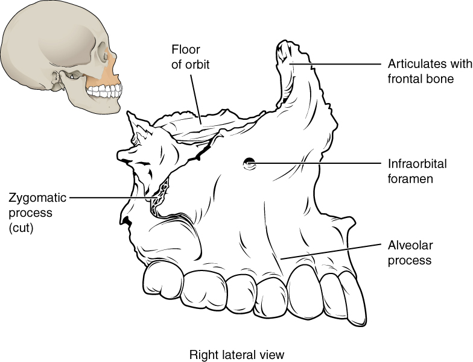
Thepalatine boneis one of a pair of irregularly shaped bones that contribute small areas to the lateral walls of the nasal cavity and the medial wall of each orbit. The largest region of each of the palatine bone is thehorizontal plate. The plates from the right and left palatine bones join together at the midline to form the posterior quarter of the hard palate (see Figure 7.8a). Thus, the palatine bones are best seen in an inferior view of the skull and hard palate.
#### Cleft Lip and Cleft Palate
During embryonic development, the right and left maxilla bones come together at the midline to form the upper jaw. At the same time, the muscle and skin overlying these bones join together to form the upper lip. Inside the mouth, the palatine processes of the maxilla bones, along with the horizontal plates of the right and left palatine bones, join together to form the hard palate. If an error occurs in these developmental processes, a birth defect of cleft lip or cleft palate may result.
Cleft lip is a common development defect that affects approximately 1:1000 births, most of which are male. This defect involves a partial or complete failure of the right and left portions of the upper lip to fuse together, leaving a cleft (gap).
A more severe developmental defect is cleft palate, which affects the hard palate. The hard palate is the bony structure that separates the nasal cavity from the oral cavity. It is formed during embryonic development by the midline fusion of the horizontal plates from the right and left palatine bones and the palatine processes of the maxilla bones. Cleft palate affects approximately 1:2500 births and is more common in females. It results from a failure of the two halves of the hard palate to completely come together and fuse at the midline, thus leaving a gap between them. This gap allows for communication between the nasal and oral cavities. In severe cases, the bony gap continues into the anterior upper jaw where the alveolar processes of the maxilla bones also do not properly join together above the front teeth. If this occurs, a cleft lip will also be seen. Because of the communication between the oral and nasal cavities, a cleft palate makes it very difficult for an infant to generate the suckling needed for nursing, thus leaving the infant at risk for malnutrition. Surgical repair is required to correct cleft palate defects.
Thezygomatic boneis also known as the cheekbone. Each of the paired zygomatic bones forms much of the lateral wall of the orbit and the lateral-inferior margins of the anterior orbital opening (see Figure 7.4). The short temporal process of the zygomatic bone projects posteriorly, where it forms the anterior portion of the zygomatic arch (see Figure 7.5).
Thenasal boneis one of two small bones that articulate (join) with each other to form the bony base (bridge) of the nose. They also support the cartilages that form the lateral walls of the nose (see Figure 7.11). These are the bones that are damaged when the nose is broken.
Eachlacrimal boneis a small, rectangular bone that forms the anterior, medial wall of the orbit (see Figure 7.4 and Figure 7.5). The anterior portion of the lacrimal bone forms a shallow depression called thelacrimal fossa, and extending inferiorly from this is thenasolacrimal canal. The lacrimal fluid (tears of the eye), which serves to maintain the moist surface of the eye, drains at the medial corner of the eye into the nasolacrimal canal. This duct then extends downward to open into the nasal cavity, behind the inferior nasal concha. In the nasal cavity, the lacrimal fluid normally drains posteriorly, but with an increased flow of tears due to crying or eye irritation, some fluid will also drain anteriorly, thus causing a runny nose.
#### Inferior Nasal Conchae
The right and left inferior nasal conchae form a curved bony plate that projects into the nasal cavity space from the lower lateral wall (see Figure 7.13). The inferior concha is the largest of the nasal conchae and can easily be seen when looking into the anterior opening of the nasal cavity.
The unpaired vomer bone, often referred to simply as the vomer, is triangular-shaped and forms the posterior-inferior part of the nasal septum (see Figure 7.11). The vomer is best seen when looking from behind into the posterior openings of the nasal cavity (see Figure 7.8a). In this view, the vomer is seen to form the entire height of the nasal septum. A much smaller portion of the vomer can also be seen when looking into the anterior opening of the nasal cavity.
Themandibleforms the lower jaw and is the only moveable bone of the skull. At the time of birth, the mandible consists of paired right and left bones, but these fuse together during the first year to form the single U-shaped mandible of the adult skull. Each side of the mandible consists of a horizontal body and posteriorly, a vertically orientedramus of the mandible(ramus = “branch”). The outside margin of the mandible, where the body and ramus come together is called theangle of the mandible(Figure \(\PageIndex{13}\)).
The ramus on each side of the mandible has two upward-going bony projections. The more anterior projection is the flattenedcoronoid process of the mandible, which provides attachment for one of the biting muscles. The posterior projection is thecondylar process of the mandible, which is topped by the oval-shapedcondyle. The condyle of the mandible articulates (joins) with the mandibular fossa and articular tubercle of the temporal bone. Together these articulations form the temporomandibular joint, which allows for opening and closing of the mouth (see Figure \(\PageIndex{3}\)). The broad U-shaped curve located between the coronoid and condylar processes is themandibular notch.
Important landmarks for the mandible include the following:
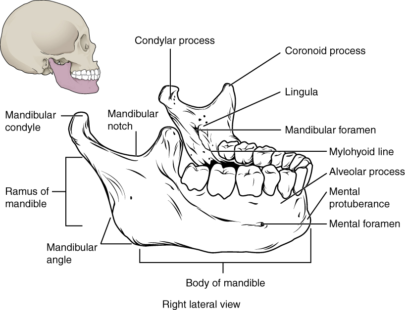
The orbit is the bony socket that houses the eyeball and contains the muscles that move the eyeball or open the upper eyelid. Each orbit is cone-shaped, with a narrow posterior region that widens toward the large anterior opening. To help protect the eye, the bony margins of the anterior opening are thickened and somewhat constricted. The medial walls of the two orbits are parallel to each other but each lateral wall diverges away from the midline at a 45° angle. This divergence provides greater lateral peripheral vision.
The walls of each orbit include contributions from seven skull bones (Figure \(\PageIndex{14}\)). The frontal bone forms the roof and the zygomatic bone forms the lateral wall and lateral floor. The medial floor is primarily formed by the maxilla, with a small contribution from the palatine bone. The ethmoid bone and lacrimal bone make up much of the medial wall and the sphenoid bone forms the posterior orbit.
At the posterior apex of the orbit is the opening of theoptic canal, which allows for passage of the optic nerve from the retina to the brain. Lateral to this is the elongated and irregularly shaped superior orbital fissure, which provides passage for the artery that supplies the eyeball, sensory nerves, and the nerves that supply the muscles involved in eye movements.
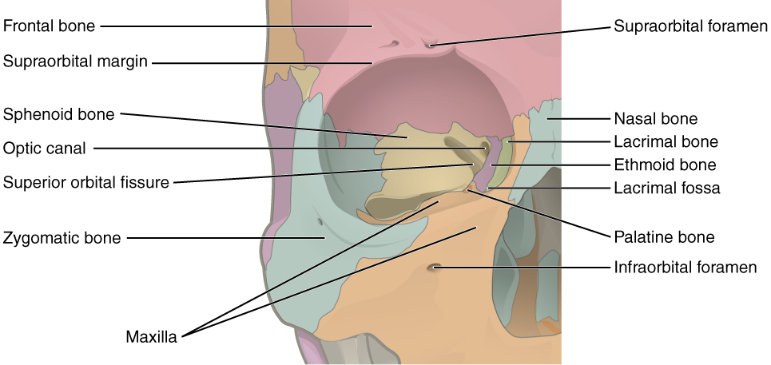
Thenasal septumconsists of both bone and cartilage components (Figure \(\PageIndex{15}\); see also Figure \(\PageIndex{9}\)). The upper portion of the septum is formed by the perpendicular plate of the ethmoid bone. The lower and posterior parts of the septum are formed by the triangular-shaped vomer bone. In an anterior view of the skull, the perpendicular plate of the ethmoid bone is easily seen inside the nasal opening as the upper nasal septum, but only a small portion of the vomer is seen as the inferior septum. A better view of the vomer bone is seen when looking into the posterior nasal cavity with an inferior view of the skull, where the vomer forms the full height of the nasal septum. The anterior nasal septum is formed by theseptal cartilage, a flexible plate that fills in the gap between the perpendicular plate of the ethmoid and vomer bones. This cartilage also extends outward into the nose where it separates the right and left nostrils. The septal cartilage is not found in the dry skull.
Attached to the lateral wall on each side of the nasal cavity are the superior, middle, and inferiornasal conchae(singular = concha), which are named for their positions (see Figure 7.13). These are bony plates that curve downward as they project into the space of the nasal cavity. They serve to swirl the incoming air, which helps to warm and moisturize it before the air moves into the delicate air sacs of the lungs. This also allows mucus, secreted by the tissue lining the nasal cavity, to trap incoming dust, pollen, bacteria, and viruses. The largest of the conchae is the inferior nasal concha, which is an independent bone of the skull. The middle concha and the superior conchae, which is the smallest, are both formed by the ethmoid bone. When looking into the anterior nasal opening of the skull, only the inferior and middle conchae can be seen. The small superior nasal concha is well hidden above and behind the middle concha.
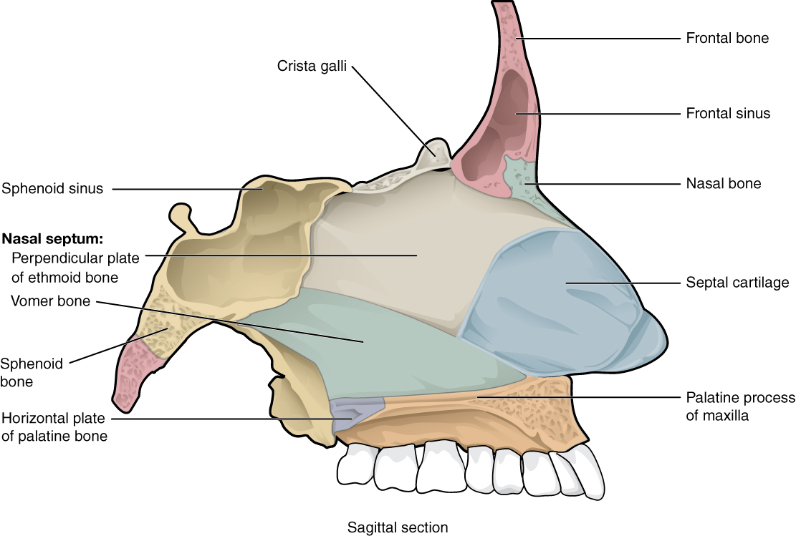
Inside the skull, the floor of the cranial cavity is subdivided into three cranial fossae (spaces), which increase in depth from anterior to posterior (see Figure 7.6, Figure 7.8b, and Figure 7.11). Since the brain occupies these areas, the shape of each conforms to the shape of the brain regions that it contains. Each cranial fossa has anterior and posterior boundaries and is divided at the midline into right and left areas by a significant bony structure or opening.
#### Anterior Cranial Fossa
The anterior cranial fossa is the most anterior and the shallowest of the three cranial fossae. It overlies the orbits and contains the frontal lobes of the brain. Anteriorly, the anterior fossa is bounded by the frontal bone, which also forms the majority of the floor for this space. The lesser wings of the sphenoid bone form the prominent ledge that marks the boundary between the anterior and middle cranial fossae. Located in the floor of the anterior cranial fossa at the midline is a portion of the ethmoid bone, consisting of the upward projecting crista galli and to either side of this, the cribriform plates.
#### Middle Cranial Fossa
The middle cranial fossa is deeper and situated posterior to the anterior fossa. It extends from the lesser wings of the sphenoid bone anteriorly, to the petrous ridges (petrous portion of the temporal bones) posteriorly. The large, diagonally positioned petrous ridges give the middle cranial fossa a butterfly shape, making it narrow at the midline and broad laterally. The temporal lobes of the brain occupy this fossa. The middle cranial fossa is divided at the midline by the upward bony prominence of the sella turcica, a part of the sphenoid bone. The middle cranial fossa has several openings for the passage of blood vessels and cranial nerves (see Figure 7.8).
Openings in the middle cranial fossa are as follows:
#### Posterior Cranial Fossa
The posterior cranial fossa is the most posterior and deepest portion of the cranial cavity. It contains the cerebellum of the brain. The posterior fossa is bounded anteriorly by the petrous ridges, while the occipital bone forms the floor and posterior wall. It is divided at the midline by the large foramen magnum (“great aperture”), the opening that provides for passage of the spinal cord.
Located on the medial wall of the petrous ridge in the posterior cranial fossa is the internal acoustic meatus (see Figure 7.11). This opening provides for passage of the nerve from the hearing and equilibrium organs of the inner ear, and the nerve that supplies the muscles of the face. Located at the anterior-lateral margin of the foramen magnum is thehypoglossal canal. These emerge on the inferior aspect of the skull at the base of the occipital condyle and provide passage for an important nerve to the tongue.
Immediately inferior to the internal acoustic meatus is the large, irregularly shapedjugular foramen(see Figure 7.8a). Several cranial nerves from the brain exit the skull via this opening. It is also the exit point through the base of the skull for all the venous return blood leaving the brain. The venous structures that carry blood inside the skull form large, curved grooves on the inner walls of the posterior cranial fossa, which terminate at each jugular foramen.
Theparanasal sinusesare hollow, air-filled spaces located within certain bones of the skull (Figure \(\PageIndex{16}\)). All of the sinuses communicate with the nasal cavity (paranasal = “next to nasal cavity”) and are lined with nasal mucosa. They serve to reduce bone mass and thus lighten the skull, and they also add resonance to the voice. This second feature is most obvious when you have a cold or sinus congestion. These produce swelling of the mucosa and excess mucus production, which can obstruct the narrow passageways between the sinuses and the nasal cavity, causing your voice to sound different to yourself and others. This blockage can also allow the sinuses to fill with fluid, with the resulting pressure producing pain and discomfort.
The paranasal sinuses are named for the skull bone that each occupies. Thefrontal sinusis located just above the eyebrows, within the frontal bone (see Figure 7.17). This irregular space may be divided at the midline into bilateral spaces, or these may be fused into a single sinus space. The frontal sinus is the most anterior of the paranasal sinuses. The largest sinus is themaxillary sinus. These are paired and located within the right and left maxillary bones, where they occupy the area just below the orbits. The maxillary sinuses are most commonly involved during sinus infections. Because their connection to the nasal cavity is located high on their medial wall, they are difficult to drain. Thesphenoid sinusis a single, midline sinus. It is located within the body of the sphenoid bone, just anterior and inferior to the sella turcica, thus making it the most posterior of the paranasal sinuses. The lateral aspects of the ethmoid bone contain multiple small spaces separated by very thin bony walls. Each of these spaces is called anethmoid air cell. These are located on both sides of the ethmoid bone, between the upper nasal cavity and medial orbit, just behind the superior nasal conchae.
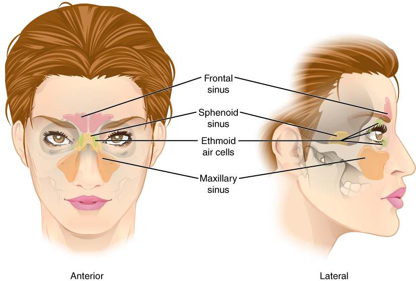
The hyoid bone is an independent bone that does not contact any other bone and thus is not part of the skull (Figure \(\PageIndex{17}\)). It is a small U-shaped bone located in the upper neck near the level of the inferior mandible, with the tips of the “U” pointing posteriorly. The hyoid serves as the base for the tongue above, and is attached to the larynx below and the pharynx posteriorly. The hyoid is held in position by a series of small muscles that attach to it either from above or below. These muscles act to move the hyoid up/down or forward/back. Movements of the hyoid are coordinated with movements of the tongue, larynx, and pharynx during swallowing and speaking.
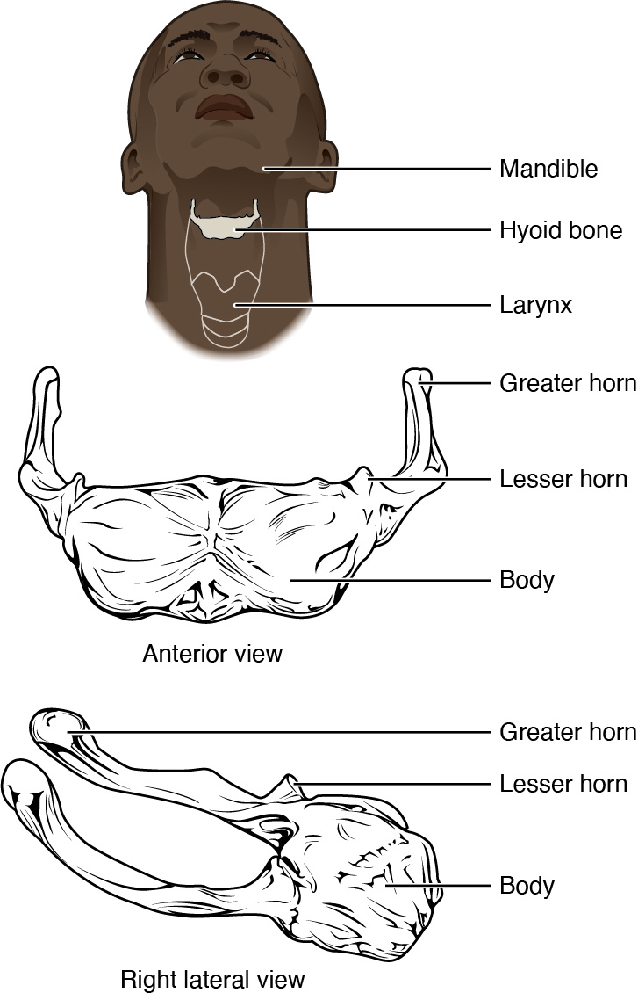
📖 OpenStax Anatomy & Physiology 2e, Section 7.3. openstax.org · CC BY 4.0
- Describe each region of the vertebral column and the number of bones in each region
- Discuss the curves of the vertebral column and how these change after birth
- Describe a typical vertebra and determine the distinguishing characteristics for vertebrae in each vertebral region and features of the sacrum and the coccyx
- Describe the structure of an intervertebral disc
- Determine the location of the ligaments that provide support for the vertebral column
The vertebral column is also known as the spinal column or spine (Figure \(\PageIndex{1}\)). It consists of a sequence of vertebrae (singular = vertebra), each of which is separated and united by anintervertebral disc. Together, the vertebrae and intervertebral discs form the vertebral column. It is a flexible column that supports the head, neck, and body and allows for their movements. It also protects the spinal cord, which passes down the back through openings in the vertebrae.
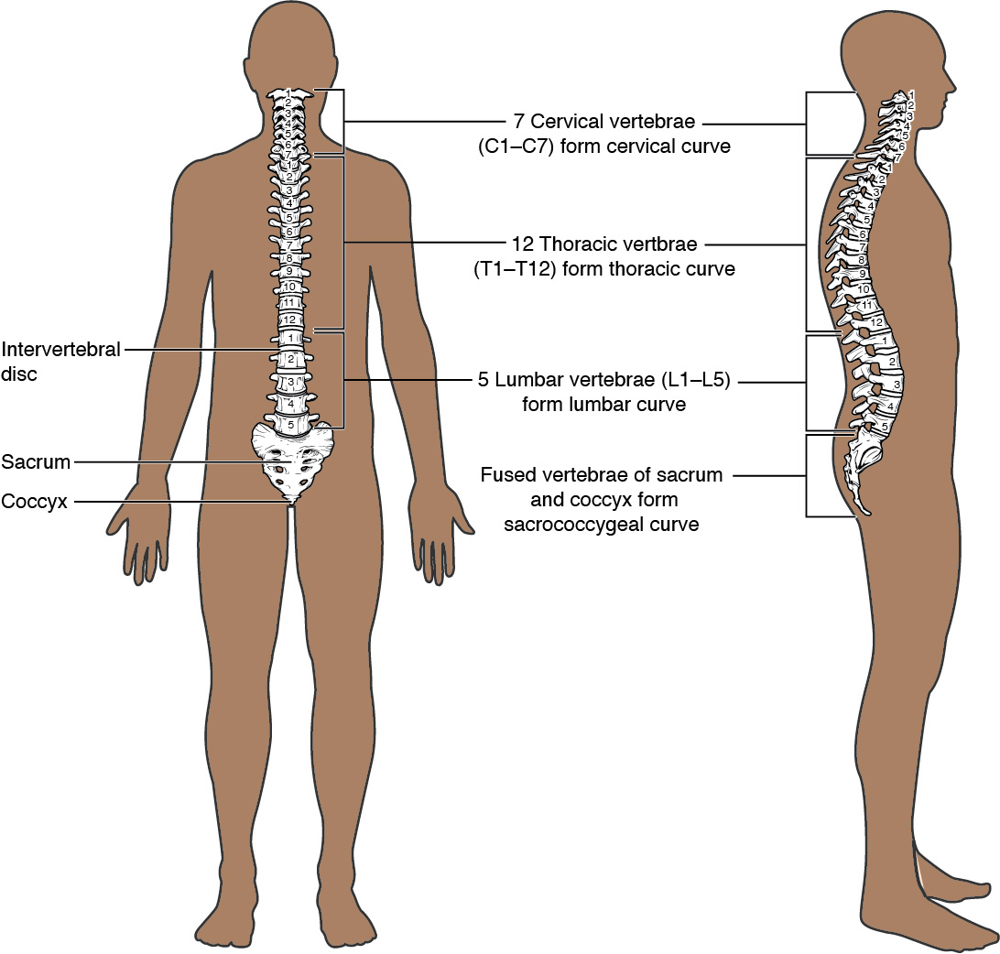
The vertebral column originally develops as a series of 33 vertebrae, but this number is eventually reduced to 24 vertebrae, plus the sacrum and coccyx. The vertebral column is subdivided into five regions, with the vertebrae in each area named for that region and numbered in descending order. In the neck, there are seven cervical vertebrae, each designated with the letter “C” followed by its number. Superiorly, the C1 vertebra articulates (forms a joint) with the occipital condyles of the skull. Inferiorly, C1 articulates with the C2 vertebra, and so on. Below these are the 12 thoracic vertebrae, designated T1–T12. The lower back contains the L1–L5 lumbar vertebrae. The single sacrum, which is also part of the pelvis, is formed by the fusion of five sacral vertebrae. Similarly, the coccyx, or tailbone, results from the fusion of four small coccygeal vertebrae. However, the sacral and coccygeal fusions do not start until age 20 and are not completed until middle age.
An interesting anatomical fact is that almost all mammals have seven cervical vertebrae, regardless of body size. This means that there are large variations in the size of cervical vertebrae, ranging from the very small cervical vertebrae of a shrew to the greatly elongated vertebrae in the neck of a giraffe. In a full-grown giraffe, each cervical vertebra is 11 inches tall.
The adult vertebral column does not form a straight line, but instead has four curvatures along its length (see Figure \(\PageIndex{1}\)). These curves increase the vertebral column’s strength, flexibility, and ability to absorb shock. When the load on the spine is increased, by carrying a heavy backpack for example, the curvatures increase in depth (become more curved) to accommodate the extra weight. They then spring back when the weight is removed. The four adult curvatures are classified as either primary or secondary curvatures. Primary curves are retained from the original fetal curvature, while secondary curvatures develop after birth.
During fetal development, the body is flexed anteriorly into the fetal position, giving the entire vertebral column a single curvature that is concave anteriorly. In the adult, this fetal curvature is retained in two regions of the vertebral column as thethoracic curve, which involves the thoracic vertebrae, and thesacrococcygeal curve, formed by the sacrum and coccyx. Each of these is thus called aprimary curvebecause they are retained from the original fetal curvature of the vertebral column.
Asecondary curvedevelops gradually after birth as the child learns to sit upright, stand, and walk. Secondary curves are concave posteriorly, opposite in direction to the original fetal curvature. Thecervical curveof the neck region develops as the infant begins to hold their head upright when sitting. Later, as the child begins to stand and then to walk, thelumbar curveof the lower back develops. In adults, the lumbar curve is generally deeper in females.
Disorders associated with the curvature of the spine includekyphosis(an excessive posterior curvature of the thoracic region),lordosis(an excessive anterior curvature of the lumbar region), andscoliosis(an abnormal, lateral curvature, accompanied by twisting of the vertebral column).
#### Vertebral Column
Developmental anomalies, pathological changes, or obesity can enhance the normal vertebral column curves, resulting in the development of abnormal or excessive curvatures (Figure \(\PageIndex{2}\)). Kyphosis, also referred to as humpback or hunchback, is an excessive posterior curvature of the thoracic region. This can develop when osteoporosis causes weakening and erosion of the anterior portions of the upper thoracic vertebrae, resulting in their gradual collapse (Figure \(\PageIndex{3}\)). Lordosis, or swayback, is an excessive anterior curvature of the lumbar region and is most commonly associated with obesity or late pregnancy. The accumulation of body weight in the abdominal region results an anterior shift in the line of gravity that carries the weight of the body. This causes in an anterior tilt of the pelvis and a pronounced enhancement of the lumbar curve.
Scoliosis is an abnormal, lateral curvature, accompanied by twisting of the vertebral column. Compensatory curves may also develop in other areas of the vertebral column to help maintain the head positioned over the feet. Scoliosis is the most common vertebral abnormality among girls. The cause is usually unknown, but it may result from weakness of the back muscles, defects such as differential growth rates in the right and left sides of the vertebral column, or differences in the length of the lower limbs. When present, scoliosis tends to get worse during adolescent growth spurts. Although most individuals do not require treatment, a back brace may be recommended for growing children. In extreme cases, surgery may be required.
Excessive vertebral curves can be identified while an individual stands in the anatomical position. Observe the vertebral profile from the side and then from behind to check for kyphosis or lordosis. Then have the person bend forward. If scoliosis is present, an individual will have difficulty in bending directly forward, and the right and left sides of the back will not be level with each other in the bent position.
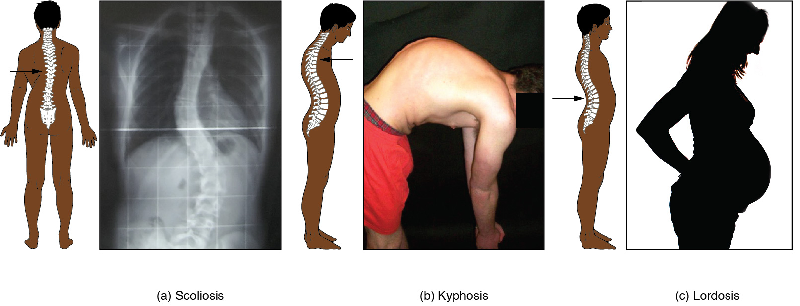
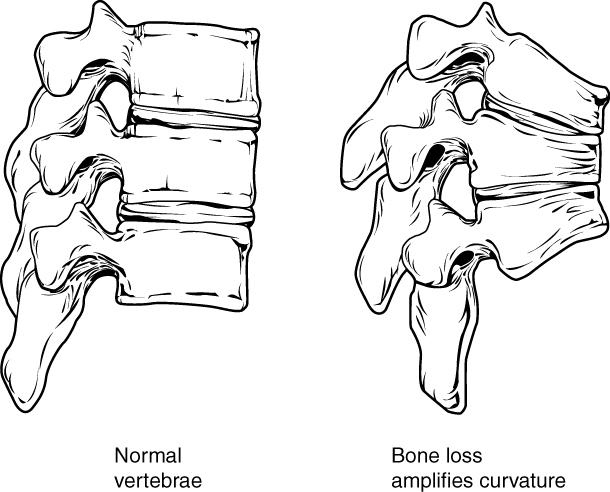
Osteoporosis is a common age-related bone disease in which bone density and strength is decreased. Watch this video to get a better understanding of how thoracic vertebrae may become weakened and may fracture due to this disease. How may vertebral osteoporosis contribute to kyphosis?
Within the different regions of the vertebral column, vertebrae vary in size and shape, but they all follow a similar structural pattern. A typical vertebra will consist of a body, a vertebral arch, and seven processes (Figure \(\PageIndex{4}\)).
The body is the anterior portion of each vertebra and is the part that supports the body weight. Because of this, the vertebral bodies progressively increase in size and thickness going down the vertebral column. The bodies of adjacent vertebrae are separated and strongly united by an intervertebral disc.
Thevertebral archforms the posterior portion of each vertebra. It consists of four parts, the right and left pedicles and the right and left laminae. Eachpedicleforms one of the lateral sides of the vertebral arch. The pedicles are anchored to the posterior side of the vertebral body. Eachlaminaforms part of the posterior roof of the vertebral arch. The large opening between the vertebral arch and body is thevertebral foramen, which contains the spinal cord. In the intact vertebral column, the vertebral foramina of all of the vertebrae align to form thevertebral (spinal) canal, which serves as the bony protection and passageway for the spinal cord down the back. When the vertebrae are aligned together in the vertebral column, notches in the margins of the pedicles of adjacent vertebrae together form anintervertebral foramen, the opening through which a spinal nerve exits from the vertebral column (Figure \(\PageIndex{5}\)).
Seven processes arise from the vertebral arch. Each pairedtransverse processprojects laterally and arises from the junction point between the pedicle and lamina. The singlespinous process(vertebral spine) projects posteriorly at the midline of the back. The vertebral spines can easily be felt as a series of bumps just under the skin down the middle of the back. The transverse and spinous processes serve as important muscle attachment sites. Asuperior articular processextends or faces upward, and aninferior articular processfaces or projects downward on each side of a vertebrae. The paired superior articular processes of one vertebra join with the corresponding paired inferior articular processes from the next higher vertebra. These junctions form slightly moveable joints between the adjacent vertebrae. The shape and orientation of the articular processes vary in different regions of the vertebral column and play a major role in determining the type and range of motion available in each region.
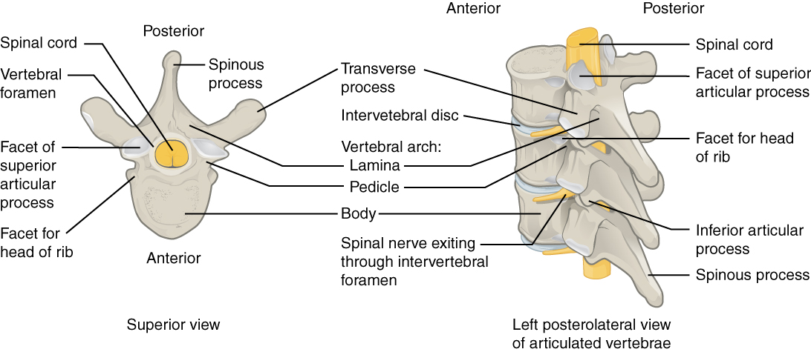
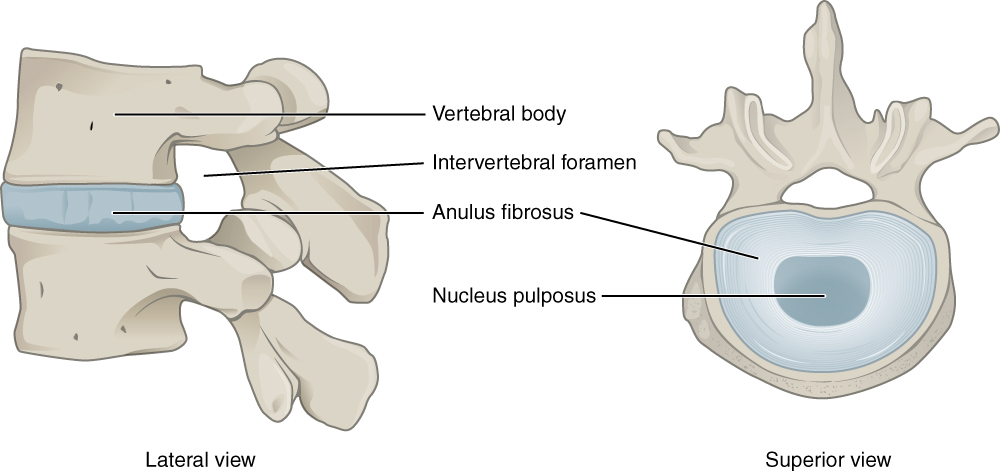
In addition to the general characteristics of a typical vertebra described above, vertebrae also display characteristic size and structural features that vary between the different vertebral column regions. Thus, cervical vertebrae are smaller than lumbar vertebrae due to differences in the proportion of body weight that each supports. Thoracic vertebrae have sites for rib attachment, and the vertebrae that give rise to the sacrum and coccyx have fused together into single bones.
#### Cervical Vertebrae
Typicalcervical vertebrae, such as C4 or C5, have several characteristic features that differentiate them from thoracic or lumbar vertebrae (Figure \(\PageIndex{6}\)). Cervical vertebrae have a small body, reflecting the fact that they carry the least amount of body weight. Cervical vertebrae usually have a bifid (Y-shaped) spinous process. The spinous processes of the C3–C6 vertebrae are short, but the spine of C7 is much longer. You can find these vertebrae by running your finger down the midline of the posterior neck until you encounter the prominent C7 spine located at the base of the neck. The transverse processes of the cervical vertebrae are sharply curved (U-shaped) to allow for passage of the cervical spinal nerves. Each transverse process also has an opening called thetransverse foramen. An important artery that supplies the brain ascends up the neck by passing through these openings. The superior and inferior articular processes of the cervical vertebrae are flattened and largely face upward or downward, respectively.
The first and second cervical vertebrae are further modified, giving each a distinctive appearance. The first cervical (C1) vertebra is also called theatlas, because this is the vertebra that supports the skull on top of the vertebral column (in Greek mythology, Atlas was the god who supported the heavens on his shoulders). The C1 vertebra does not have a body or spinous process. Instead, it is ring-shaped, consisting of ananterior archand aposterior arch. The transverse processes of the atlas are longer and extend more laterally than do the transverse processes of any other cervical vertebrae. The superior articular processes face upward and are deeply curved for articulation with the occipital condyles on the base of the skull. The inferior articular processes are flat and face downward to join with the superior articular processes of the C2 vertebra.
The second cervical (C2) vertebra is called theaxis, because it serves as the axis for rotation when turning the head toward the right or left. The axis resembles typical cervical vertebrae in most respects, but is easily distinguished by thedens(odontoid process), a bony projection that extends upward from the vertebral body. The dens joins with the inner aspect of the anterior arch of the atlas, where it is held in place by the transverse ligament.
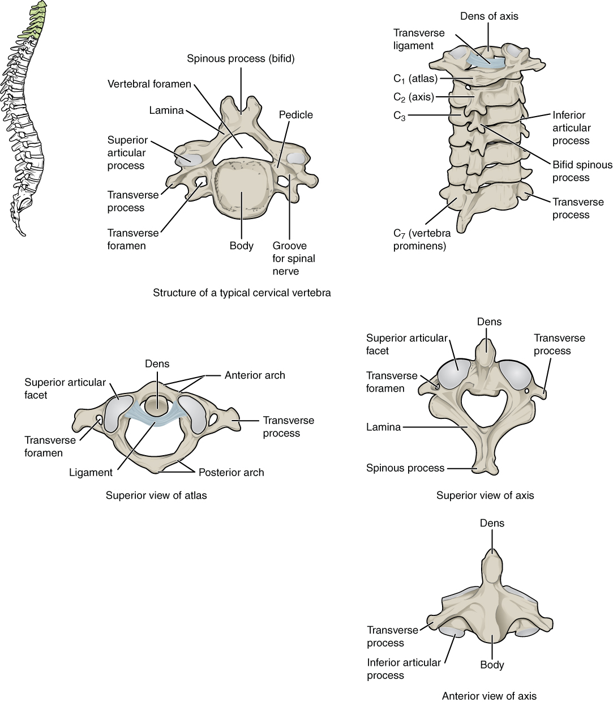
#### Thoracic Vertebrae
The bodies of thethoracic vertebraeare larger than those of cervical vertebrae (Figure \(\PageIndex{7}\). The characteristic feature for a typical midthoracic vertebra is the spinous process, which is long and has a pronounced downward angle that causes it to overlap the next inferior vertebra. The superior articular facets of thoracic vertebrae face anteriorly and the inferior facets face posteriorly. These orientations are important determinants for the type and range of movements available to the thoracic region of the vertebral column.
Thoracic vertebrae have several additional articulation sites, each of which is called afacet, where a rib is attached. Most thoracic vertebrae have two facets located on the lateral sides of the body, each of which is called acostal facet(costal = “rib”). These are for articulation with the head (end) of a rib. An additional facet is located on the transverse process for articulation with the tubercle of a rib.
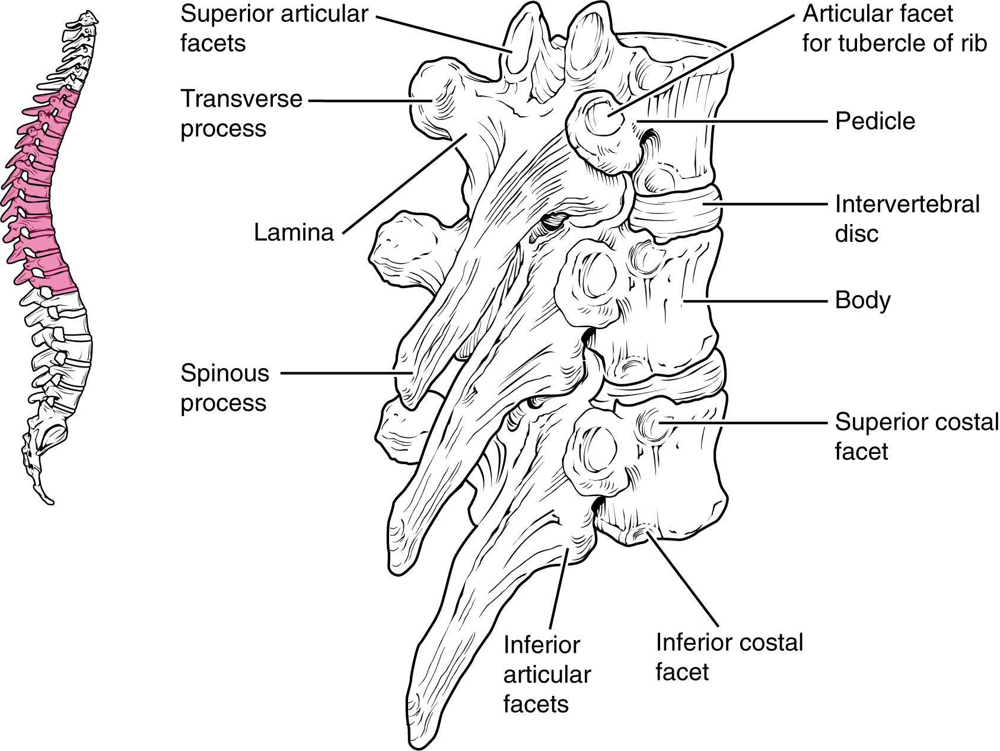
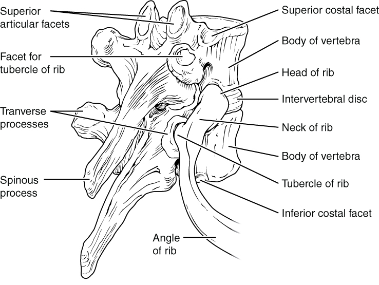
#### Lumbar Vertebrae
Lumbar vertebraecarry the greatest amount of body weight and are thus characterized by the large size and thickness of the vertebral body (Figure \(\PageIndex{9}\)). They have short transverse processes and a short, blunt spinous process that projects posteriorly. The articular processes are large, with the superior process facing medially and the inferior facing laterally.
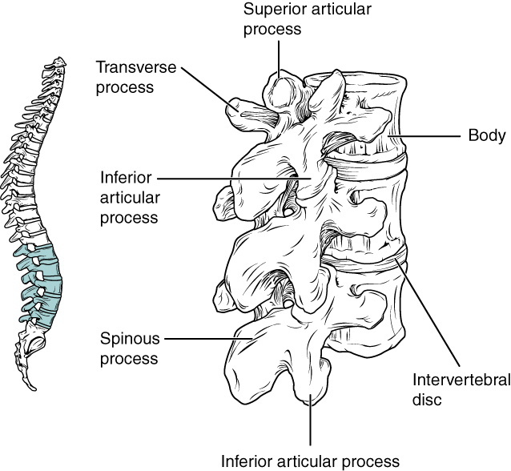
#### Sacrum and Coccyx
The sacrum is a triangular-shaped bone that is thick and wide across its superior base where it is weight bearing and then tapers down to an inferior, non-weight bearing apex (Figure \(\PageIndex{10}\)). It is formed by the fusion of five sacral vertebrae, a process that does not begin until after the age of 20. On the anterior surface of the older adult sacrum, the lines of vertebral fusion can be seen as four transverse ridges. On the posterior surface, running down the midline, is themedian sacral crest, a bumpy ridge that is the remnant of the fused spinous processes (median = “midline”; while medial = “toward, but not necessarily at, the midline”). Similarly, the fused transverse processes of the sacral vertebrae form thelateral sacral crest.
Thesacral promontoryis the anterior lip of the superior base of the sacrum. Lateral to this is the roughened auricular surface, which joins with the ilium portion of the hipbone to form the immobile sacroiliac joints of the pelvis. Passing inferiorly through the sacrum is a bony tunnel called thesacral canal, which terminates at thesacral hiatusnear the inferior tip of the sacrum. The anterior and posterior surfaces of the sacrum have a series of paired openings calledsacral foramina(singular = foramen) that connect to the sacral canal. Each of these openings is called aposterior (dorsal) sacral foramenoranterior (ventral) sacral foramen. These openings allow for the anterior and posterior branches of the sacral spinal nerves to exit the sacrum. Thesuperior articular process of the sacrum, one of which is found on either side of the superior opening of the sacral canal, articulates with the inferior articular processes from the L5 vertebra.
The coccyx, or tailbone, is derived from the fusion of four very small coccygeal vertebrae (see Figure \(\PageIndex{10}\)). It articulates with the inferior tip of the sacrum. It is not weight bearing in the standing position, but may receive some body weight when sitting.
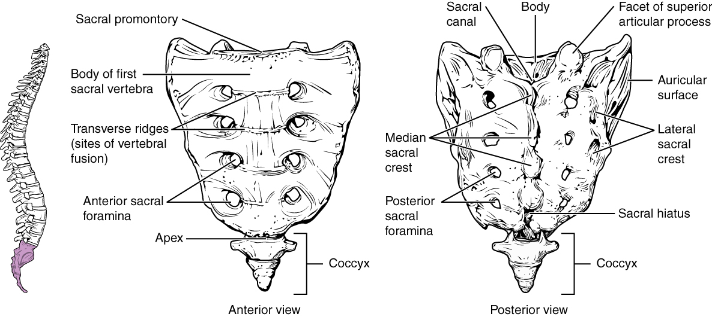
The bodies of adjacent vertebrae are strongly anchored to each other by an intervertebral disc. This structure provides padding between the bones during weight bearing, and because it can change shape, also allows for movement between the vertebrae. Although the total amount of movement available between any two adjacent vertebrae is small, when these movements are summed together along the entire length of the vertebral column, large body movements can be produced. Ligaments that extend along the length of the vertebral column also contribute to its overall support and stability.
#### Intervertebral Disc
Anintervertebral discis a fibrocartilaginous pad that fills the gap between adjacent vertebral bodies (see Figure \(\PageIndex{5}\)). Each disc is anchored to the bodies of its adjacent vertebrae, thus strongly uniting these. The discs also provide padding between vertebrae during weight bearing. Because of this, intervertebral discs are thin in the cervical region and thickest in the lumbar region, which carries the most body weight. In total, the intervertebral discs account for approximately 25 percent of your body height between the top of the pelvis and the base of the skull. Intervertebral discs are also flexible and can change shape to allow for movements of the vertebral column.
Each intervertebral disc consists of two parts. Theanulus fibrosusis the tough, fibrous outer layer of the disc. It forms a circle (anulus = “ring” or “circle”) and is firmly anchored to the outer margins of the adjacent vertebral bodies. Inside is thenucleus pulposus, consisting of a softer, more gel-like material. It has a high water content that serves to resist compression and thus is important for weight bearing. With increasing age, the water content of the nucleus pulposus gradually declines. This causes the disc to become thinner, decreasing total body height somewhat, and reduces the flexibility and range of motion of the disc, making bending more difficult.
The gel-like nature of the nucleus pulposus also allows the intervertebral disc to change shape as one vertebra rocks side to side or forward and back in relation to its neighbors during movements of the vertebral column. Thus, bending forward causes compression of the anterior portion of the disc but expansion of the posterior disc. If the posterior anulus fibrosus is weakened due to injury or increasing age, the pressure exerted on the disc when bending forward and lifting a heavy object can cause the nucleus pulposus to protrude posteriorly through the anulus fibrosus, resulting in a herniated disc (“ruptured” or “slipped” disc) (Figure \(\PageIndex{11}\)). The posterior bulging of the nucleus pulposus can cause compression of a spinal nerve at the point where it exits through the intervertebral foramen, with resulting pain and/or muscle weakness in those body regions supplied by that nerve. The most common sites for disc herniation are the L4/L5 or L5/S1 intervertebral discs, which can cause sciatica, a widespread pain that radiates from the lower back down the thigh and into the leg. Similar injuries of the C5/C6 or C6/C7 intervertebral discs, following forcible hyperflexion of the neck from a collision accident or football injury, can produce pain in the neck, shoulder, and upper limb.
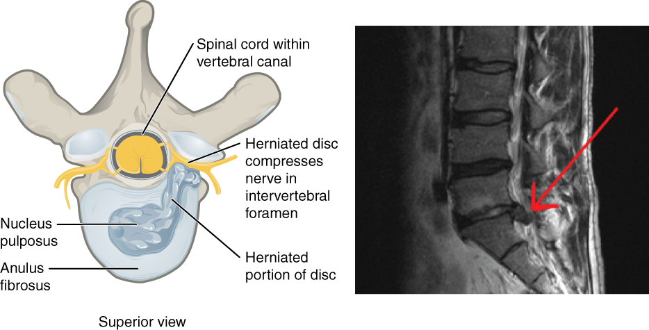
Watch this video to learn about a herniated disc.
Watch this second video to see one possible treatment for a herniated disc, removing the damaged portion of the disc. How could lifting a heavy object produce pain in a lower limb?
#### Ligaments of the Vertebral Column
Adjacent vertebrae are united by ligaments that run the length of the vertebral column along both its posterior and anterior aspects (Figure \(\PageIndex{12}\)). These serve to resist excess forward or backward bending movements of the vertebral column, respectively.
Theanterior longitudinal ligamentruns down the anterior side of the entire vertebral column, uniting the vertebral bodies. It serves to resist excess backward bending of the vertebral column. Protection against this movement is particularly important in the neck, where extreme posterior bending of the head and neck can stretch or tear this ligament, resulting in a painful whiplash injury. Prior to the mandatory installation of seat headrests, whiplash injuries were common for passengers involved in a rear-end automobile collision.
Thesupraspinous ligamentis located on the posterior side of the vertebral column, where it interconnects the spinous processes of the thoracic and lumbar vertebrae. This strong ligament supports the vertebral column during forward bending motions. In the posterior neck, where the cervical spinous processes are short, the supraspinous ligament expands to become thenuchal ligament(nuchae = “nape” or “back of the neck”). The nuchal ligament is attached to the cervical spinous processes and extends upward and posteriorly to attach to the midline base of the skull, out to the external occipital protuberance. It supports the skull and prevents it from falling forward. This ligament is much larger and stronger in four-legged animals such as cows, where the large skull hangs off the front end of the vertebral column. You can easily feel this ligament by first extending your head backward and pressing down on the posterior midline of your neck. Then tilt your head forward and you will fill the nuchal ligament popping out as it tightens to limit anterior bending of the head and neck.
Additional ligaments are located inside the vertebral canal, next to the spinal cord, along the length of the vertebral column. Theposterior longitudinal ligamentis found anterior to the spinal cord, where it is attached to the posterior sides of the vertebral bodies. Posterior to the spinal cord is theligamentum flavum(“yellow ligament”). This consists of a series of short, paired ligaments, each of which interconnects the lamina regions of adjacent vertebrae. The ligamentum flavum has large numbers of elastic fibers, which have a yellowish color, allowing it to stretch and then pull back. Both of these ligaments provide important support for the vertebral column when bending forward.
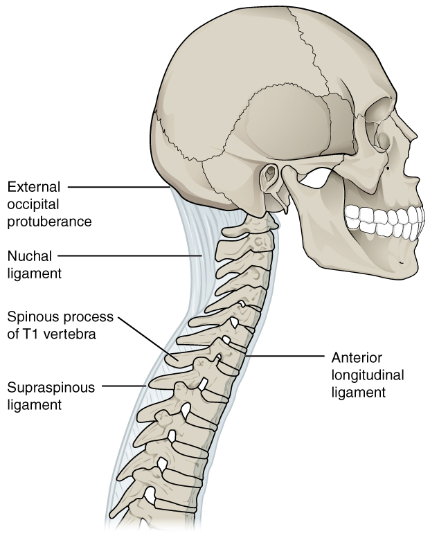
Use thistoolto identify the bones, intervertebral discs, and ligaments of the vertebral column. The thickest portions of the anterior longitudinal ligament and the supraspinous ligament are found in which regions of the vertebral column?
Chiropractors are health professionals who use nonsurgical techniques to help patients with musculoskeletal system problems that involve the bones, muscles, ligaments, tendons, or nervous system. They treat problems such as neck pain, back pain, joint pain, or headaches. Chiropractors focus on the patient’s overall health and can also provide counseling related to lifestyle issues, such as diet, exercise, or sleep problems. If needed, they will refer the patient to other medical specialists.
Chiropractors use a drug-free, hands-on approach for patient diagnosis and treatment. They will perform a physical exam, assess the patient’s posture and spine, and may perform additional diagnostic tests, including taking X-ray images. They primarily use manual techniques, such as spinal manipulation, to adjust the patient’s spine or other joints. They can recommend therapeutic or rehabilitative exercises, and some also include acupuncture, massage therapy, or ultrasound as part of the treatment program. In addition to those in general practice, some chiropractors specialize in sport injuries, neurology, orthopaedics, pediatrics, nutrition, internal disorders, or diagnostic imaging.
To become a chiropractor, students must have 3–4 years of undergraduate education, attend an accredited, four-year Doctor of Chiropractic (D.C.) degree program, and pass a licensure examination to be licensed for practice in their state. With the aging of the baby-boom generation, employment for chiropractors is expected to increase.
📖 OpenStax Anatomy & Physiology 2e, Section 7.4. openstax.org · CC BY 4.0
- Discuss the components that make up the thoracic cage
- Identify the parts of the sternum and define the sternal angle
- Discuss the parts of a rib and rib classifications
The thoracic cage (rib cage) forms the thorax (chest) portion of the body. It consists of the 12 pairs of ribs with their costal cartilages and the sternum (Figure \(\PageIndex{1}\) ). The ribs are anchored posteriorly to the 12 thoracic vertebrae (T1–T12). The thoracic cage protects the heart and lungs.
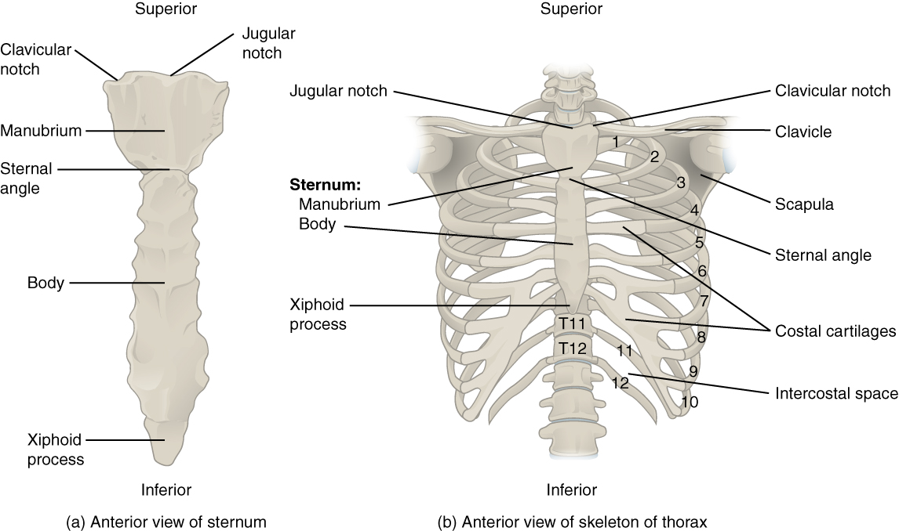
The sternum is the elongated bony structure that anchors the anterior thoracic cage. It consists of three parts: the manubrium, body, and xiphoid process. Themanubriumis the wider, superior portion of the sternum. The top of the manubrium has a shallow, U-shaped border called thejugular (suprasternal) notch. This can be easily felt at the anterior base of the neck, between the medial ends of the clavicles. Theclavicular notchis the shallow depression located on either side at the superior-lateral margins of the manubrium. This is the site of the sternoclavicular joint, between the sternum and clavicle. The first ribs also attach to the manubrium.
The elongated, central portion of the sternum is the body. The manubrium and body join together at thesternal angle, so called because the junction between these two components is not flat, but forms a slight bend. The second rib attaches to the sternum at the sternal angle. Since the first rib is hidden behind the clavicle, the second rib is the highest rib that can be identified by palpation. Thus, the sternal angle and second rib are important landmarks for the identification and counting of the lower ribs. Ribs 3–7 attach to the sternal body.
The inferior tip of the sternum is thexiphoid process. This small structure is cartilaginous early in life, but gradually becomes ossified starting during middle age.
Each rib is a curved, flattened bone that contributes to the wall of the thorax. The ribs articulate posteriorly with the T1–T12 thoracic vertebrae, and most attach anteriorly via their costal cartilages to the sternum. There are 12 pairs of ribs. The ribs are numbered 1–12 in accordance with the thoracic vertebrae.
#### Parts of a Typical Rib
The posterior end of a typical rib is called thehead of the rib(see Figure 7.27). This region articulates primarily with the costal facet located on the body of the same numbered thoracic vertebra and to a lesser degree, with the costal facet located on the body of the next higher vertebra. Lateral to the head is the narrowedneck of the rib. A small bump on the posterior rib surface is thetubercle of the rib, which articulates with the facet located on the transverse process of the same numbered vertebra. The remainder of the rib is thebody of the rib(shaft). Just lateral to the tubercle is theangle of the rib, the point at which the rib has its greatest degree of curvature. The angles of the ribs form the most posterior extent of the thoracic cage. In the anatomical position, the angles align with the medial border of the scapula. A shallowcostal groovefor the passage of blood vessels and a nerve is found along the inferior margin of each rib.
#### Rib Classifications
The bony ribs do not extend anteriorly completely around to the sternum. Instead, each rib ends in acostal cartilage. These cartilages are made of hyaline cartilage and can extend for several inches. Most ribs are then attached, either directly or indirectly, to the sternum via their costal cartilage (see Figure 7.32). The ribs are classified into three groups based on their relationship to the sternum.
Ribs 1–7 are classified astrue ribs(vertebrosternal ribs). The costal cartilage from each of these ribs attaches directly to the sternum. Ribs 8–12 are calledfalse ribs(vertebrochondral ribs). The costal cartilages from these ribs do not attach directly to the sternum. For ribs 8–10, the costal cartilages are attached to the cartilage of the next higher rib. Thus, the cartilage of rib 10 attaches to the cartilage of rib 9, rib 9 then attaches to rib 8, and rib 8 is attached to rib 7. The last two false ribs (11–12) are also calledfloating ribs(vertebral ribs). These are short ribs that do not attach to the sternum at all. Instead, their small costal cartilages terminate within the musculature of the lateral abdominal wall.
📖 OpenStax Anatomy & Physiology 2e, Section 7.5. openstax.org · CC BY 4.0
- Discuss the two types of embryonic bone development within the skull
- Describe the development of the vertebral column and thoracic cage
The axial skeleton begins to form during early embryonic development. However, growth, remodeling, and ossification (bone formation) continue for several decades after birth before the adult skeleton is fully formed. Knowledge of the developmental processes that give rise to the skeleton is important for understanding the abnormalities that may arise in skeletal structures.
During the third week of embryonic development, a rod-like structure called thenotochorddevelops dorsally along the length of the embryo. The tissue overlying the notochord enlarges and forms the neural tube, which will give rise to the brain and spinal cord. By the fourth week, mesoderm tissue located on either side of the notochord thickens and separates into a repeating series of block-like tissue structures, each of which is called asomite. As the somites enlarge, each one will split into several parts. The most medial of these parts is called asclerotome. The sclerotomes consist of an embryonic tissue called mesenchyme, which will give rise to the fibrous connective tissues, cartilages, and bones of the body.
The bones of the skull arise from mesenchyme during embryonic development in two different ways. The first mechanism produces the bones that form the top and sides of the brain case. This involves the local accumulation of mesenchymal cells at the site of the future bone. These cells then differentiate directly into bone producing cells, which form the skull bones through the process of intramembranous ossification. As the brain case bones grow in the fetal skull, they remain separated from each other by large areas of dense connective tissue, each of which is called afontanelle(Figure \(\PageIndex{1}\) ). The fontanelles are the soft spots on an infant’s head. They are important during birth because these areas allow the skull to change shape as it squeezes through the birth canal. After birth, the fontanelles allow for continued growth and expansion of the skull as the brain enlarges. The largest fontanelle is located on the anterior head, at the junction of the frontal and parietal bones. The fontanelles decrease in size and disappear by age 2. However, the skull bones remained separated from each other at the sutures, which contain dense fibrous connective tissue that unites the adjacent bones. The connective tissue of the sutures allows for continued growth of the skull bones as the brain enlarges during childhood growth.
The second mechanism for bone development in the skull produces the facial bones and floor of the brain case. This also begins with the localized accumulation of mesenchymal cells. However, these cells differentiate into cartilage cells, which produce a hyaline cartilage model of the future bone. As this cartilage model grows, it is gradually converted into bone through the process of endochondral ossification. This is a slow process and the cartilage is not completely converted to bone until the skull achieves its full adult size.
At birth, the brain case and orbits of the skull are disproportionally large compared to the bones of the jaws and lower face. This reflects the relative underdevelopment of the maxilla and mandible, which lack teeth, and the small sizes of the paranasal sinuses and nasal cavity. During early childhood, the mastoid process enlarges, the two halves of the mandible and frontal bone fuse together to form single bones, and the paranasal sinuses enlarge. The jaws also expand as the teeth begin to appear. These changes all contribute to the rapid growth and enlargement of the face during childhood.
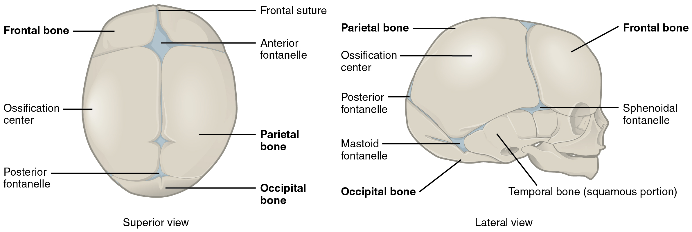
Development of the vertebrae begins with the accumulation of mesenchyme cells from each sclerotome around the notochord. These cells differentiate into a hyaline cartilage model for each vertebra, which then grow and eventually ossify into bone through the process of endochondral ossification. As the developing vertebrae grow, the notochord largely disappears. However, small areas of notochord tissue persist between the adjacent vertebrae and this contributes to the formation of each intervertebral disc.
The ribs and sternum also develop from mesenchyme. The ribs initially develop as part of the cartilage model for each vertebra, but in the thorax region, the rib portion separates from the vertebra by the eighth week. The cartilage model of the rib then ossifies, except for the anterior portion, which remains as the costal cartilage. The sternum initially forms as paired hyaline cartilage models on either side of the anterior midline, beginning during the fifth week of development. The cartilage models of the ribs become attached to the lateral sides of the developing sternum. Eventually, the two halves of the cartilaginous sternum fuse together along the midline and then ossify into bone. The manubrium and body of the sternum are converted into bone first, with the xiphoid process remaining as cartilage until late in life.
View thisvideoto review the two processes that give rise to the bones of the skull and body. What are the two mechanisms by which the bones of the body are formed and which bones are formed by each mechanism?
#### Craniosynostosis
The premature closure (fusion) of a suture line is a condition called craniosynostosis. This error in the normal developmental process results in abnormal growth of the skull and deformity of the head. It is produced either by defects in the ossification process of the skull bones or failure of the brain to properly enlarge. Genetic factors are involved, but the underlying cause is unknown. It is a relatively common condition, occurring in approximately 1:2000 births, with males being more commonly affected. Primary craniosynostosis involves the early fusion of one cranial suture, whereas complex craniosynostosis results from the premature fusion of several sutures.
The early fusion of a suture in primary craniosynostosis prevents any additional enlargement of the cranial bones and skull along this line. Continued growth of the brain and skull is therefore diverted to other areas of the head, causing an abnormal enlargement of these regions. For example, the early disappearance of the anterior fontanelle and premature closure of the sagittal suture prevents growth across the top of the head. This is compensated by upward growth by the bones of the lateral skull, resulting in a long, narrow, wedge-shaped head. This condition, known as scaphocephaly, accounts for approximately 50 percent of craniosynostosis abnormalities. Although the skull is misshapen, the brain still has adequate room to grow and thus there is no accompanying abnormal neurological development.
In cases of complex craniosynostosis, several sutures close prematurely. The amount and degree of skull deformity is determined by the location and extent of the sutures involved. This results in more severe constraints on skull growth, which can alter or impede proper brain growth and development.
Cases of craniosynostosis are usually treated with surgery. A team of physicians will open the skull along the fused suture, which will then allow the skull bones to resume their growth in this area. In some cases, parts of the skull will be removed and replaced with an artificial plate. The earlier after birth that surgery is performed, the better the outcome. After treatment, most children continue to grow and develop normally and do not exhibit any neurological problems.
📖 OpenStax Anatomy & Physiology 2e, Section 7.6. openstax.org · CC BY 4.0
| Section | Title |
|---|---|
| 7.2 | 7.2: Divisions of the Skeletal System |
| 7.3 | 7.3: The Skull |
| 7.4 | 7.4: The Vertebral Column |
| 7.5 | 7.5: The Thoracic Cage |
| 7.6 | 7.6: Embryonic Development of the Axial Skeleton |